자동차정비기사 (2015-08-16 기출문제)
1과목: 일반기계공학
1. 코일스프링의 전체 반지름을 R, 스프링 소선의 반지름을 r이라 할 때, C=R/r을 무엇이라 하는가?
- 스프링 상수
- 스프링 지수
- 스프링 부하계수
- 스프링 수정계수
(정답률: 63%)

2. 서징(surging)을 피하는 방법으로 옳지 않은 것은?
- 방출밸브의 의한 방법
- 동, 정익을 조절하는 방법
- 회전수를 일정하게 고정하는 방법
- 주로 상승이 없는 특성으로 하는 방법
(정답률: 66%)
3. 인장강도가 4500N/cm2인 연강재의 안전율이 12이면 허용응력은 얼마인가?
- 215 N/cm2
- 375 N/cm2
- 41500 N/cm2
- 54000 N/cm2
(정답률: 60%)
4. 연강재로 구조물을 안전하게 설계한 값 중 일반적인 경우 동일 재료에서 그 값이 가장 작은 것은?
- 항복점
- 극한강도
- 탄성한도
- 사용응력
(정답률: 65%)
5. 주물에 사용되는 주물사의 구비조건으로 옳지 않은 것은?
- 열전달이 잘 이루어져야 한다.
- 성형성과 통기성이 커야 한다.
- 화학적 변화가 없고, 내화성이 커야 한다.
- 주물표면에서 이탈이 잘 이루어져야 한다.
(정답률: 44%)
6. 다음 기계요소 중에 강판을 연결 및 접합하는 것이 주목적인 것은?
- 리벳
- 세레이션
- 접선 키
- 스플라인
(정답률: 66%)
7. 비틀림 응력은 원형단면의 어느 곳에서 가장 크게 발생하는가?
- 중립축
- 축의 중심
- 원주 가장자리
- 중심과 원주 가장자리와의 중간점
(정답률: 62%)
8. 축의 지름을 d, 축 재료의 전단응력을 τ라 하면, 비틀림모멘트를 바르게 나타낸 것은?
- πd2τ/16
- πd3τ/16
- πd2τ/32
- πd3τ/32
(정답률: 58%)
9. 그림과 같이 중앙에서 집중하중 P를 받고 있는 일단 고정, 타단 지지보에서 반력 Rʙ는?
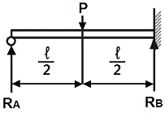
- (3P)/16
- (15P)/16
- (11P)/16
- (13P)/16
(정답률: 59%)
10. 미터 보통나사의 나사산의 각도는 얼마인가?
- 30°
- 45°
- 55°
- 60°
(정답률: 56%)
11. 금속의 소성가공에서 단조가공의 주목적으로 가장 적합한 것은?
- 변태와 대량생산
- 재료조직의 개선과 성형
- 조직의 재결정과 가공경화
- 결정핵 성장과 내부응력 이완
(정답률: 49%)
12. 기계재료의 경도(hardness)에 관한 설명으로 가장 적합한 것은?
- 하중을 단면적으로 나눈 값으로 타나낸다.
- 외력에 저항하는 단면의 크기로 표시한다.
- 금속표면의 외력에 대한 저항력을 말한다.
- 압축, 굽힘, 인장, 충격, 비틀림, 피로 등이 있다.
(정답률: 56%)
13. 합성수지의 일반적인 성질로 옳지 않은 것은?
- 열에 약하다.
- 전기 절연성이 우수한다.
- 가공성이 좋고 성형이 간단하다.
- 비중과 강도의 비인 비강도가 비교적 작다.
(정답률: 58%)
14. 연강판의 후판은 물론 박판용접에서도 용접성이 가장 뛰어난 성능을 보이는 용접법은?
- 스폿 용접
- 산소 아세틸렌용접
- 전기 아크용접
- CO2 가스 아크 용접
(정답률: 56%)
15. 다음 기계재료를 상온에서 열팽창 계수가 큰 것부터 작은 것 순으로 나열한 것은?
- Al＞Cu＞탄소강
- Cu＞Al＞탄소강
- Al＞탄소강＞Cu
- 탄소강＞Al＞Cu
(정답률: 69%)
16. 절삭공구의 플랭크(flank) 마모 현상에 대한 설명으로 옳은 것은?
- 절삭면에 평행하게 마모한다.
- 고온·고압에 따른 용착마모라고도 한다.
- 공구 윗면이 칩에 의해 긁힘으로 발생한다.
- 공구 인선의 일부가 순식간에 파손되어 탈락한다.
(정답률: 49%)
17. 지름 20㎝의 관 속에 물이 40kgf/s로 흐르고 있다. 평균속도는 약 몇 m/s인가? (단, 중력가속도는 980㎝/s2이다.)
- 0.13
- 1.3
- 12.5
- 127.7
(정답률: 23%)
18. 구멍(축)의 허용한계치수의 해석에서 “통과 측에는 모든 치수 또는 결정량이 동시에 검사되고 정지 측에는 각 치수가 개개로 검사되어야 한다.”는 원리는?
- 아베(Abbe)의 원리
- 자콥스(Jaccbs)의 원리
- 테일러(Taylor)의 원리
- 브라운 샤프(Brown sharp)의 원리
(정답률: 64%)
19. 잇수 68개, 바깥지름 350㎜인 표준 스퍼기어의 모듈 M은 얼마인가?
- 2.5
- 5
- 7
- 10
(정답률: 44%)
20. 공압기계에서 왕복 압축기의 특징에 관한 설명으로 옳지 않은 것은?
- 대풍량에 적합하지 않다.
- 압력비가 원심식보다 높다.
- 기계적 접촉부분이 적고, 회전속도가 높다.
- 풍량이 압력 변화에 따라 거의 변화하지 않는다.
(정답률: 52%)
2과목: 기계열역학
21. 공기표준 Brayton 사이클에 대한 설명 중 틀린 것은?
- 단순 가스터빈에 대한 이상사이클이다.
- 열 교환기에서의 과정은 등온과정으로 가정한다.
- 터빈에서의 과정은 가역단열 팽창과정으로 가정한다.
- 터번에서 생산되는 일의 40% 내지 80%를 압축기에서 소모한다.
(정답률: 33%)
22. 500℃와 20℃의 두 열원 사이에 설치되는 열기관이 가질 수 있는 최대의 이론 열효율(%)은 약 몇 %인가?
- 4
- 38
- 62
- 96
(정답률: 52%)
23. 냉동용량이 35kW인 어느 냉동기의 성능계수가 4.8이라면 이 냉동기를 작동하는데 필요한 동력은?
- 약 9.2kW
- 약 8.3kW
- 약 7.3kW
- 약 6.5kW
(정답률: 62%)
24. 직경 20㎝, 길이 5m인 원통 외부에 두께 5㎝의 석면이 씌워져 있다. 석면 내면과 외면의 온도가 각각 100℃, 20℃이면 손실되는 열량은 몇 kJ/h인가? (단, 석면의 열전도율은 0.418kJ/mh·HL·℃로 가정 한다.)
- 2591
- 3011
- 3431
- 3851
(정답률: 28%)
25. 8℃의 이상기체를 가역단열 압축하여 그 체적을 1/5로 줄였을 때 기체의 온도는 몇 ℃로 되겠는가? (단, k=1.4이다.)
- 313℃
- 294℃
- 262℃
- 222℃
(정답률: 55%)
26. 어느 내연기관에서 피스톤의 흡기과정으로 실린더 속에 0.2kg의 기체가 들어 왔다. 이것을 압축할 때 15kJ의 일이 필요하였고, 10kJ의 열을 방출하였다 고 한다면, 이 기체 1kg 당 내부에너지 증가량은?(오류 신고가 접수된 문제입니다. 반드시 정답과 해설을 확인하시기 바랍니다.)
- 10kJ
- 15kJ
- 35kJ
- 50kJ
(정답률: 37%)
27. Otto 사이클에서 열효율이 35%가 되려면 압축비를 얼마로 하여야 하는가? (단, k=1.3이다.)
- 3.0
- 3.5
- 4.2
- 6.3
(정답률: 43%)
28. 피스톤-실린더로 구성된 용기 안에 300kPa, 100℃ 상태의 CO2가 0.2m3들어 있다. 이 기체를 “PV1·2=일정”인 관계가 만족되도록 피스톤 위에 추를 더해가며 온도가 200℃가 될 때까지 압축하였다. 이 과정 동안 기체가 한 일을 구하면? (단, CO2의 기체상수는 0.189kJ/kg·K이다.)
- -20kJ
- -60kJ
- -80kJ
- -120kJ
(정답률: 29%)
29. 카르노 사이클(Carnot cycle)로 작동되는 기관의 실린더 내에서 1kg의 공기가 온도 120℃에서 열량 40kJ를 얻어 등온팽창한다고 하면 엔트로피의 변화는 얼마인가?
- 0.102kJ/kg·K
- 0.132kJ/kg·K
- 0.162kJ/kg·K
- 0.192kJ/kg·K
(정답률: 44%)
30. 순수물질의 압력을 일정하게 유지하면서 엔트로피 를 증가시킬 때 엔탈피는 어떻게 되는가?
- 증가한다.
- 감소한다.
- 변함없다.
- 경우에 따라 다르다.
(정답률: 50%)
31. 효율이 40%인 열기관에서 유효하게 발생되는 동력이 110kW라면 주위로 방출되는 총 열량은 약 몇 kW인가?
- 375
- 165
- 155
- 110
(정답률: 47%)
32. 압력이 0.2MPa, 온도가 20℃의 공기를 압력이 2MPa로 될 때까지 가역단열 압축했을 때 온도는 약 몇 (℃)인가? (단, 비열비 k=1.4이다.)
- 225.7℃
- 273.7℃
- 292.7℃
- 358.7℃
(정답률: 52%)
33. 1kg의 헬륨이 100kPa 하에서 정압 가열되어 온도가 300K에서 350K로 변하였을 때, 엔트로피의 변화량은 몇 kJ/K인가? (단, h=5.238T의 관계를 갖는다. 엔탈피 h의 단위는 kJ/kgf, 온도 T의 단위는 K이다.)
- 0.694
- 0.756
- 0.807
- 0.968
(정답률: 52%)
34. 폴리트로픽 변화를 표시하는 식 PVn=C에서 n=k일 때의 변화는?
- 등압변화
- 등온변화
- 등적변화
- 가역단열변화
(정답률: 56%)
35. 마찰이 없는 피스톤에 12℃, 150kPa의 공기 1.2kg이 들어있다. 이 공기가 600kPa로 압축되는 동안 외부로 열이 전달되어 온도는 일정하게 유지되었다. 이 과정에서 공기가 한 일은 약 얼마인가? (단, 공기의 기체상수는 0.287kJ/kg·K이며, 이상기체로 가정한다.)
- -136kJ
- -100kJ
- -13.6kJ
- -10kJ
(정답률: 46%)
36. 처음의 압력이 500kPa이고, 체적이 2m3인 기체가 “PV=일정”인 과정으로 압력이 100kPa까지 팽창할 때 밀폐계가 하는 일(kJ)을 나타내는 식은?
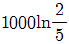
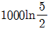
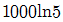
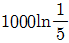
(정답률: 58%)
37. 밀폐계 안의 유체가 상태 1에서 상태2로 가역압축 될 때, 하는 일을 나타내는 식은? (단, P는 압력, V는 체적, T는 온도이다.)
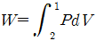
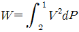
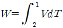
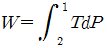
(정답률: 51%)
38. 과열, 과냉이 없는 이상적인 증기압축 냉동사이클에서 증발온도가 일정하고 응축온도가 내려 갈수록 성능계수는?
- 증가한다.
- 감소한다.
- 일정하다.
- 증가하기도 하고, 감소하기도 한다.
(정답률: 58%)
39. 어떤 시스템이 변화를 겪는 동안 주위의 엔트로피가 5kJ/K감소하였다. 시스템의 엔트로피 변화는?
- 2kJ/K 감소
- 5kJ/K 감소
- 3kJ/K 증가
- 6kJ/K 증가
(정답률: 49%)
40. 물 1kg이 압력 300kPa에서 증발할 때 증가한 체적이 0.8m3이였다면 이때의 외부 일은? (단, 온도는 일정하다고 가정한다.)
- 140kJ
- 240kJ
- 320kJ
- 420kJ
(정답률: 60%)
3과목: 자동차기관
41. 기관의 압축비를 나타내는 것은?
- (연소실 체적＋행정체적)/연소실 체적
- (연소실 체적-실린더 단면적)/행정체적
- (행정체적＋연소실 체적)/피스톤 헤드 단면적
- (연소실 체적＋피스톤 단면적)/행정체적
(정답률: 79%)
42. 흡입밸브의 닫힘 시기에 관한 설명 중 옳지 않은 것은?
- 저속 운전영역에서 흡입밸브를 늦게 닫으면 혼합가스가 역류한다.
- 저속 운전영역에서 흡입밸브를 빨리 닫으면 불안전 한 연소가 이루어진다.
- 고속 운전영역에서 흡입밸브를 빨리 닫으면 회전력 과 최고출력이 낮아진다.
- 고속 운전영역에서 흡입밸브를 늦게 닫으면 흡입공기의 관성을 충분히 활용할 수 있다.
(정답률: 52%)
43. 전자제어 가솔린 기관에서 비동기 분사를 바르게 설명한 것은?
- 급 감속할 때 연료를 차단하여 연료를 절약하기 위 한 보조 분사이다.
- 산소센서의 신호에 따라 분사하는 방식이다.
- 기관 회전수와 흡입 공기량에 비례하여 분사하는 것 을 말한다.
- 크랭크각에 상관없이 급가속시에 분사되는 일시적 인 분사이다.
(정답률: 70%)
44. LPI 기관의 장점이 아닌 것은?
- 겨울철 냉간 시동성이 우수하다.
- 정밀한 연료제어로 유해 배출가스 배출이 적다.
- 타르발생 및 역화가 많다.
- LPG 기관에 비해 출력이 높다.
(정답률: 65%)
45. 전자제어 가솔린 엔진의 노크센서에 대한 설명으로 맞는 것은?
- 노크신호가 검출되면 엔진은 점화시기를 진각시킨다.
- 노크센서를 조립할 때에는 반드시 스프링 와셔를 장착해서 조립해야 한다.
- 노크센서를 조립할 때에는 가능한 한 실린더 블록에 강하게 밀착하기 위해 최대 토크로 체결한다.
- 노크센서를 조립할 때에는 그리스나 밀봉제 등을 도포하지 않으면 규정된 토크로 조립되어야 한다.
(정답률: 69%)
46. 디젤기관의 배출가스 중 질소산화물의 발생 원인으로 거리가 가장 먼 것은?
- 최고 연소온도가 낮을 때
- 엔진의 부하가 과도한 조건에서 운전할 때
- 냉각수 온도가 높을 때
- 압축비가 높을 때
(정답률: 42%)
47. 기관 설계 시 옥탄가 결정에 직접 영향을 미치는 요소가 아닌 것은?
- 압축비
- 대기압
- 점화시기
- 공연비
(정답률: 58%)
48. 피스톤의 중심부와 피스톤 핀 중심을 약간 편차 (off-set)시키는 이유와 편차시킨 방향은?
- 피스톤 슬랩(slap)을 적게 하기 위하여 크랭크축 회 전방향으로
- 피스톤 슬랩(slap)을 적게 하기 위하여 크랭크축 회 전반대 방향으로
- 실린더의 압축압력을 크게 하기 위하여 크랭크축 회 전방향으로
- 실린더의 압축압력을 크게 하기 위하여 크랭크축 회 전반대 방향으로
(정답률: 73%)
49. 가솔린 기관의 냉간 급가속 시 발생하는 유해가스를 바르게 짝지은 것은?
- CO, NOx
- PM, HC
- HC, NOx
- CO, HC
(정답률: 74%)
50. 다음 중 공기과잉율(λ) 식으로 맞는 것은?
- 이론공연비
- 실제공연비
- 실제공연비/이론공연비
- 공기흡입량/연료소비량
(정답률: 77%)
51. 디젤 노크를 저감시키는 요인이 아닌 것은?
- 연료의 착화지연을 길게 한다.
- 연료의 착화시기를 정확하게 한다.
- 흡기온도를 높게 한다.
- 압축비를 높게 한다.
(정답률: 78%)
52. 기관에서 베어링 메탈이 갖추어야 할 조건이 아닌 것은?
- 하중 부담성
- 내 부식성
- 열전도성
- 내 가공성
(정답률: 73%)
53. 가솔린 기관의 압축비를 8에서 10으로 증가시키면 이론 열효율은 얼마 증가하는가? (단, 비열비 k=1.4이다.)
- 약 3.5%
- 약 3.7%
- 약 4.0%
- 약 4.3%
(정답률: 52%)
54. 가솔린 기관과 비교한 LPG 기관에 대한 설명으로 틀린 것은?
- 혹한기에 부탄의 비율을 높인다.
- 동절기에는 시동성이 떨어진다.
- 퍼콜레이션(percolation)현상이 없다.
- 대기오염이 적고 위생적이다.
(정답률: 58%)
55. 실린더 내경을 측정할 경우 외측 마이크로미터와 같이 사용해야 하는 것은?
- 버니어캘리퍼스
- 텔레스코핑 게이지
- 간극게이지와 내측 마이크로미터
- 다이얼 게이지
(정답률: 57%)
56. 연소가스의 온도가 1500℃, 냉각수의 온도 85℃, 전열면젹 1,538cm2인 실린더 기관의 발열량을 구하면? (단, 열통과율 K=217.4kcal/m2h℃이다.)
- 약 473,121.09kcal/h
- 약 632,520.4kcal/h
- 약 537,160.4kcal/h
- 약 823,250.7kcal/h
(정답률: 50%)
57. 전자제어 연료분사 기관의 연료펌프의 첵밸브는 어느 때 닫히게 되는가?
- 연료압력 조절장치가 작동할 때
- 엔진이 정지했을 때
- 연료압력이 과다하게 높을 때
- 연료압력 조절기에 연결된 진공호스가 빠졌을 때
(정답률: 62%)
58. 산소센서의 기능을 바르게 설명한 것은?
- 흡기 매니폴드에 직접 산소를 공급하는 역할을 한다.
- 배기가스 중 산소의 양을 감지하여 출력전압을 컴퓨터에 보내준다.
- 배출가스를 직접적으로 감소시키는 역할을 한다.
- 직접 연료와 산소 혼합비를 적절하게 조정한다.
(정답률: 70%)
59. 기관의 가변흡기 제어장치에 대한 설명으로 옳은 것은?
- 공회전 시에는 흡기다기관의 길이를 짧게 제어하여 정숙성을 유지한다.
- 저속 저부하 영역에서는 흡입통로를 길게 하여 흡입 공기의 관성효과를 높인다.
- 고속 고부하 시에는 흡기다기관의 길이를 길게 하여 흡입효율을 높인다.
- 고속 고부하 시에는 흡입압력을 낮게 하여 흡입효율 을 증대한다.
(정답률: 66%)
60. 일반적인 커먼레일 연료방식에서 연료공급과정을 나열한 것으로 옳은 것은?
- 저압연료펌프→연료여과기→커먼레일→고압연료펌프 →인젝터
- 고압연료펌프→연료여과기→저압연료펌프→커먼레일 →인젝터
- 커먼레일→연료여과기→고압연료펌프→저압연료펌프 →인젝터
- 저압연료펌프→연료여과기→고압연료펌프→커먼레일 →인젝터
(정답률: 62%)
4과목: 자동차새시
61. 전자제어 현가장치의 제어요소 중 거리가 가장 먼 것은?
- 피칭제어
- 롤링제어
- 다이브 제어
- 토크스티어 제어
(정답률: 73%)
62. 유체 클러치에서 펌프와 터빈사이의 회전 전력 변환비는 얼마를 넘지 못하는가?
- 0.5∼3 : 1
- 1 : 1
- 0.5∼0.8 : 1
- 2∼3 : 1
(정답률: 54%)
63. 자동변속기 차량의 토크컨버터에서 토크증대 비율이 가장 클 때는?
- 스톨포인트일 때
- 클러치 포인트일 때
- 댐퍼클러치 작동일 때
- 오버드라이브일 때
(정답률: 64%)
64. 자동변속기 스톨테스트 결과 진단기에서 출력축 속도 센서 값이 출력되었다. 자동변속기에서 문제가 없다면 측정 과정 중 어디에서 실수한 것인가?
- 변속레인지를 2단으로 하여 시험하였다.
- 엔진을 충분히 난기 시키지 못했다.
- 가속페달을 끝까지 밟지 못했다.
- 브레이크 페달을 완전히 밟지 못했다.
(정답률: 52%)
65. 엔진의 최대 토크 670N·m, 총감속기 5.57, 구동차륜의 유효 반경 0.5m, 차량 총중량 150,000N인 자동차의 가속능력은?
- 0.0298
- 0.293
- 0.0498
- 0.4985
(정답률: 24%)
66. 어느 승용자동차가 72km/h로 주행하다가 144km/h로 증속하는데 4초 걸렸다면 평균가속도는?
- 2m/s2
- 3m/s2
- 4m/s2
- 5m/s2
(정답률: 34%)
67. 제동 안전장치 중에서 후륜 쪽의 브레이크 유압을 적재 하중에 따라 조절하는 것은?
- 텐덤형 마스터 실린더
- 로드 센싱 프로포셔닝 밸브
- 이너셔 밸브
- 릴리프 밸브
(정답률: 71%)
68. 유압식 동력조항장치에서 직진할 경우 유압펌프내의 피스톤 운동상태는?
- 동력 피스톤이 왼쪽으로 움직여 왼쪽으로 조향한다.
- 동력 피스톤이 오른쪽으로 움직여 오른쪽으로 조향 한다.
- 동력 피스톤은 리액션 스프링을 압축하여 왼쪽으로 이동한다.
- 동력 피스톤은 좌·우실의 유압이 같으므로 정지하고 있다.
(정답률: 72%)
69. 타이어 및 휠 림과 관련하여 일반적인 점검 및 정비에 대한 설명으로 틀린 것은?
- 사용하는 타이어에 적합한 림을 사용한다.
- 휠 너트는 대각선으로 규정 토크로 조인다.
- 림에 녹을 제거하고 균열은 수리하여 사용한다.
- 분할 림을 교환할 때는 세트별 동일기호로 교환한다.
(정답률: 76%)
70. 전자제어 동력조향장치의 차속감응형 제어방식 중에 펌프 오일량을 차속에 따라 제어하고 유로를 절환하여 적절한 조향감각을 얻도록 하는 방식은?
- 조향각 제어방식
- 반력제어 방식
- 관성제어 방식
- 속도제어 방식
(정답률: 34%)
71. 엔진의 여유출력을 이용한 오버드라이브에 대한 설명으로 틀린 것은?
- 추진축의 회전속도가 엔진의 회전속도보다 느리다.
- 자동차의 속도를 빠르게 할 수 있다.
- 평탄한 도로 주행 시 연료를 절약할 수 있다.
- 엔진의 운전이 정속하고 수명이 연장된다.
(정답률: 78%)
72. 고압 타이어의 안지름이 20인치, 바깥지름이 32인치, 폭 6인치, 플라이 수(PR) 10인 경우 호칭치수를 바르게 표시한 것은?
- 32X6-10PR
- 20X6-10PR
- 6.0X32-10PR
- 6.0X20-10PR
(정답률: 62%)
73. 분리형 배력 브레이크 장치에서 릴레이 밸브 및 릴레이 피스톤의 역할은?
- 마스터 실린더에서 오는 유압을 받아 동력 피스톤 뒤쪽 방향으로 부압을 도입하거나 차단하는 역할
- 동력 피스톤의 양쪽 실의 압력차에 따라 작동하여 하이드로릭 피스톤을 눌러서 강력한 유압을 발생하는 역할
- 기관에서 발생하는 최고의 부압을 유지하고 주행할 때 흡기매니폴드 안의 부압 변화에 따른 영향을 방지하는 역할
- 마스터 실린더의 유압을 직접 휠실린더에 가하고 휠실린더에서 유압이 빠지는 것을 방지하는 역할
(정답률: 41%)
74. 클러치가 전달할 수 있는 회전력에 대한 설명이다. 가장 거리가 먼 것은?
- 클러치 스프링이 압력판을 누르는 힘에 비례한다.
- 클러치 마찰면의 마찰계수에 비례한다.
- 클러치 페이싱의 크기에 비례한다.
- 토션 스프링의 장력에 비례한다.
(정답률: 54%)
75. 전자제어 현가장치(ECS)의 작동에 대한 설명으로 틀린 것은?
- 노면의 상태에 따라 감쇠력이 변화한다.
- 주행 조건에 따라 감쇠력이 변화한다.
- 댐퍼의 감쇠력을 여러 단계로 설정하여 조정한다.
- 항상 부드러운 상태로만 감쇠력이 조정된다.
(정답률: 77%)
76. 차동기어 구성품 중 직진 시 자전을 하지 않고 공전만 하는 것은?
- 링기어
- 구동 피니언 기어
- 차동기어 케이스
- 차동 피니언
(정답률: 69%)
77. 다음은 TPMS의 압력센서를 설명한 것이다. 괄호 안에 알맞은 것을 순서대로 적은 것은?
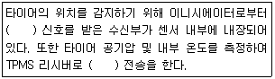
- RF, LF
- MF, TF
- TF, MF
- LF, RF
(정답률: 65%)
78. 브레이크 장치에서 나타날 수 있는 현상과 정비에 관련된 내용으로 거리가 먼 것은?
- 긴 비탈길에서 브레이크 사용빈도가 많은 운전을 할 때는 기관 브레이크를 병용한다.
- 슈의 리턴 스프링 쇠손으로 인해 잔압이 저하된 경 우 스프링을 교환하여 잔압을 높인다.
- 유압라인에 공기가 들어가 있으면 브레이크 페달을 밟았다 놓는 것을 10회 이상 실시한다.
- 드럼과 라이닝의 끌림이 원인인 경우 라이닝의 간극 을 조정한다.
(정답률: 55%)
79. 전자 주차 브레이크 장치의 특징을 설명한 것으로 가장 거리가 먼 것은?
- 스위치를 작은 힘으로 조작하여 작동과 해제를 할 수 있다.
- 운전자의 의지에 따라 체결력을 다단 조정할 수 있다.
- 비상 제동 시 안정성이 향상된다.
- 페달이나 핸드레버가 필요 없음으로 운전석의 공간 활용이 용이 해진다.
(정답률: 71%)
80. 엔진경고등이 점등되어 진단기로 자기 진단 결과 통신 불량이 되었다. 원인으로 가장 거리가 먼 것 은?
- 배터리 전압이 불량하다.
- k-라인 통신선이 단선되었다.
- 엔진 ECU가 불량하다.
- LIN-라인 통신선이 단선되었다.
(정답률: 53%)
5과목: 자동차전기
81. 바디 컨트롤 모듈(BCM)을 자기진단 해 본 결과 'B1603 CAN 버스 이상'이 출력되어 고장상세 정보를 확인해 보니 아래와 같았다. CAN 관련계통을 점검하는 방법으로 가장 옳은 것은?
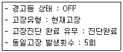
- BCM은 고속 CAN을 사용하므로 자기 진단기를 이용하여 회로를 점검하는 것이 원칙이다.
- 고장유형이 “현재고장” 이므로 진단장비와 차량 간의 통신 상태를 먼저 점검한다.
- 테스트램프를 이용하여 고장코드를 해석한다.
- BCM 통신 관련부품을 하나씩 탈거하면서 고장코드가 소거되는지 확인한다.
(정답률: 50%)
82. 자기 인덕턴스 0.7H의 코일에 전류가 0.1초간에 2A의 변화가 있었다면, 몇 V의 유도 기전력이 발생 되는가?
- 10V
- 12V
- 14V
- 16V
(정답률: 43%)
83. 엔진구동 상태에서 발전기를 점검하던 중 출력단자 (B＋)가 쇼트 되었다. 이때 가장 파손되기 쉬운 부품 은?
- 브러시
- 스테이터 코일
- 로터코일
- 실리콘 다이오드
(정답률: 57%)
84. 전조등과 시험기의 전면 렌즈 사이의 거리를 1m로 맞추어 시험하는 전조등 테스터기는?
- 집광형 전조등 시험기
- 스크린형 전조등 시험기
- 투영식 전조등 시험기
- 조합식 전조등 시험기
(정답률: 59%)
85. 그림에서 12V 배터리 2개를 직렬로 연결하여 충전 할 때 적합한 전압과 전류는?
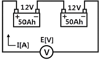
- 12V, 5A
- 24V, 5A
- 12V, 20A
- 24V, 20A
(정답률: 67%)
86. 에어컨 시스템의 신 냉매(R-134a)의 특징을 설명한 것 중 틀린 것은?(오류 신고가 접수된 문제입니다. 반드시 정답과 해설을 확인하시기 바랍니다.)
- R-12와 비슷한 열역학적 성질을 갖고 있다.
- 불연성이고 독성이 있다.
- 오존을 파괴하는 성분인 불소(F)가 없다.
- 다른 물질과 쉽게 반응하지 않아 안정적이다.
(정답률: 57%)
87. 오토라이트 전조등에서 빛을 감지하는 반도체 소자 는?
- 광량센서
- 피에조 소자
- NTC 서미스터
- 발광 다이오드
(정답률: 70%)
88. 에어컨의 고장 현상과 원인을 설명한 것으로 거리 가 가장 먼 것은?
- 시원하지 않음 - 냉매부족
- 풍량부족 - 벨트 헐거움
- 컴프레서가 작동 안 됨 - 압력스위치 불량
- 콘덴서 팬이 회전 안 됨 - 모터불량
(정답률: 75%)
89. 타이어 공기압 경고 장치(TPMS)에서 타이어 압력센서 작동모드가 아닌 것은?
- 비 작동모드(off mode)
- 정지모드(stationary mode)
- 가속모드(acceleration mode)
- 주행모드(rolling mode)
(정답률: 58%)
90. 하이브리드 모터 3상의 단자 명이 아닌 것은?
- U
- V
- W
- Z
(정답률: 69%)
91. 상호유도작용에 대한 설명으로 가장 옳은 것은?
- 도체에 전류를 흐르게 하면 자장이 발생하는 현상
- 코일에 전류를 흐르게 하면 코일의 반대방향에 유도 전압이 발생하는 현상
- 자석이 아닌 물체가 자계 내에서 자기력의 영향을 받아 자기를 띠는 현상
- 코일에 자력선을 변화시키면 다른 코일에 자력선의 변화를 방해하려는 기전력이 유도되는 현상
(정답률: 48%)
92. 하이브리드 자동차 바퀴에서 발생되는 회전 동력을 전기 에너지로 전환하여 배터리로 충전을 실시하는 모드는?
- 정속모드
- 정지모드
- 가속모드
- 감속모드
(정답률: 72%)
93. 기동전동기가 3000rpm일 때 발생한 회전력이 5kgf-m이면 기동전동기의 출력은 약 얼마인가?
- 20PS
- 21PS
- 22PS
- 23PS
(정답률: 50%)
94. 전자제어 에어컨장치에서 컴프레서가 컷오프(cut off) 제어되는 경우로 틀린 것은?
- 급출발 성능을 향상시키기 위해 컷오프 제어된다.
- 가속 성능을 좋게 하기 위해 컷오프 제어된다.
- 등판 성능을 향상시키기 위해 컷오프 제어된다.
- 냉방효과를 높이기 위해 컷오프 제어된다.
(정답률: 82%)
95. 전자식 점화장치에서 크랭킹 시 2차 코일에 고전압 이 유기되지 않을 경우 가장 먼저 점검해야 할부 품은?
- 점화플러그
- 노크센서
- 매니폴드 압력센서
- 크랭크 포지션 센서
(정답률: 42%)
96. 전자제어 무배전기점화장치(DLI)에서 필요하지 않은 구성부품은?
- 크랭크 각 센서
- TDC 센서
- 배전기 로터
- 점화플러그
(정답률: 77%)
97. 에어백 PPD(Passenger Presence Detect)센서가 감지하지 않는 것은?
- 승객 있음
- 승객 없음
- PPD 센서 고장
- 벨트 프리텐셔너 고장
(정답률: 71%)
98. 보조제동등에 대한 설명으로 다음 중 틀린 것은?
- 자동차의 수직중신선의 좌우수평각 45도에서 발광면이 보일 것
- 1등 당 광도는 25칸델라이상 160칸델라 이하일 것
- 등화렌즈의 유효조광면적은 28cm2 이상일 것
- 다른 등화와 겸용하는 제동등은 제동 조작을 할 경 우 그 광도가 2배 이상 증가할 것
(정답률: 62%)
99. 하이브리드 전기차에서 고전압 배터리 또는 차량화재 발생 시 조치해야 할 사항이 아닌 것은?
- 차량의 시동키를 OFF하여 전기 동력 시스템 작동을 차단시킨다.
- 화재 초기상태라면 트렁크를 열고 신속히 세이프티 플러그를 탈거한다.
- 메인 릴레이(＋)를 작동시켜 고전압 배터리(＋) 전원 을 인가한다.
- 화재 진압을 위해서는 액체 물질을 사용하지 말고 분말소화기 또는 모래를 이용한다.
(정답률: 70%)
100. 짧은 시간에 큰 전류를 축적, 방출할 수 있는 것은?
- 인버터
- 캐패시터
- 트랜스
- 컨버터
(정답률: 73%)